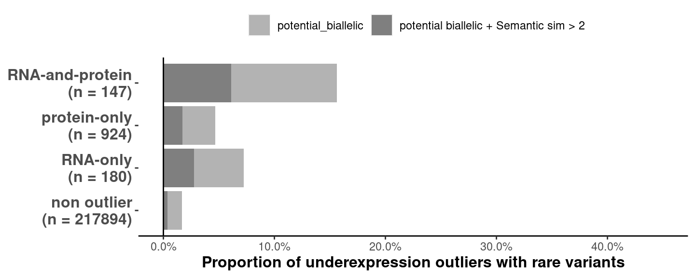

source('src/config.R')
# Read combined file produced on full variant table
px <- fread(snakemake@input$enrichments_proportions)
# px <- fread("/s/project/mitoMultiOmics/multiOMICs_integration/raw_data/enrichment_proportions_variants.tsv")
px <- px[up_down_outlier %in% c("RNA_underexpression", "Protein_underexpression", "RNA_Protein_underexpression", "non_outlier")]
px <- px[, c("up_down_outlier", "var_type", "prop", "total", "type")]
px[var_type == "potential biallelic SemSim > 2", var_type := "potential biallelic + Semantic sim > 2"]
px[, var_type := factor(var_type, levels = c("no rare variant", "rare",
"potential_biallelic", "potential biallelic + Semantic sim > 2",
"non_coding", "synonymous", "coding", "frameshift", "splice", "stop"))]
# unique(px$up_down_outlier)
px[up_down_outlier == "RNA_Protein_underexpression", up_down_outlier := "RNA-and-protein"]
px[up_down_outlier == "Protein_underexpression" , up_down_outlier := "protein-only" ]
px[up_down_outlier == "RNA_underexpression" , up_down_outlier := "RNA-only" ]
px[up_down_outlier == "non_outlier", up_down_outlier := "non outlier"]
px[, outlier_class_label := paste0(up_down_outlier, "\n", "(n = ", total, ")") ]
# unique(px$outlier_class_label)
px$outlier_class_label <- factor(px$outlier_class_label ,
levels = c( "non outlier\n(n = 217894)",
"RNA-only\n(n = 180)",
"protein-only\n(n = 924)",
"RNA-and-protein\n(n = 147)" ))
px <- px[ !(var_type %in% c("no rare variant", "rare") )]
#px[ type == "var_type", widt := 1]
#px[ type == "pb", widt := 0.5]
s_fig <- ggplot(px[ type != "var_type"], aes(outlier_class_label, prop)) +
geom_bar(stat= 'identity', aes(fill = var_type)) +
geom_hline(yintercept = 0, colour = "black") +
scale_fill_manual(values = variant_colors ) +
coord_flip(ylim = c(0, 0.45)) +
scale_y_continuous(breaks=seq(0, 0.45, 0.1), labels=scales::percent) +
labs( y = "Proportion of underexpression outliers with rare variants")+
# theme_classic()+
theme(legend.position="top",
legend.direction = "horizontal",
legend.title = element_blank(),
axis.title.y = element_blank() ,
axis.text.y = element_text(face="bold", size=12),
axis.title.x = element_text(face="bold", size=12) ,
panel.grid.major = element_blank(),
panel.grid.minor = element_blank(),
panel.border = element_blank(),
panel.background = element_blank(),
axis.line.x.bottom = element_line(colour = "black"),
plot.background = element_rect( fill = "white")) +
guides(fill = guide_legend(nrow = 1))
s_fig

pdf(snakemake@output$fig, # "/s/project/mitoMultiOmics/multiOMICs_integration/Figures/Supplementary_figures/S_Fig2_e.pdf",
width = 7.5, height = 3, useDingbats=FALSE )
print(s_fig)
dev.off()
## png
## 2
IyctLS0KIycgdGl0bGU6IFN1cHBsZW1lbnRhcnkgRmlndXJlIDJlLCBwcm9wb3J0aW9uIG9mIG91dGxpZXJzIHdpdGggcGIgdmFyaWFudHMgYW5kIFNlbVNpbSA+MiAKIycgYXV0aG9yOiBzbWlybm92ZAojJyB3YjoKIycgIGlucHV0OgojJyAgLSBlbnJpY2htZW50c19wcm9wb3J0aW9uczogJ2BzbSBjb25maWdbIlJBV19EQVRBIl0gKyAiL2VucmljaG1lbnRfcHJvcG9ydGlvbnNfdmFyaWFudHMudHN2ImAnCiMnICBvdXRwdXQ6CiMnICAtIGZpZzogJ2BzbSBjb25maWdbIkZJR1VSRV9ESVIiXSArICIvU3VwcGxlbWVudGFyeV9maWd1cmVzL1NfRmlnMl9lLnBkZiJgJwojJyBvdXRwdXQ6IAojJyAgIGh0bWxfZG9jdW1lbnQ6CiMnICAgIGNvZGVfZm9sZGluZzogaGlkZQojJyAgICBjb2RlX2Rvd25sb2FkOiBUUlVFCiMnLS0tCgpzb3VyY2UoJ3NyYy9jb25maWcuUicpCgoKIyBSZWFkIGNvbWJpbmVkIGZpbGUgcHJvZHVjZWQgb24gZnVsbCB2YXJpYW50IHRhYmxlCnB4IDwtIGZyZWFkKHNuYWtlbWFrZUBpbnB1dCRlbnJpY2htZW50c19wcm9wb3J0aW9ucykKIyBweCA8LSBmcmVhZCgiL3MvcHJvamVjdC9taXRvTXVsdGlPbWljcy9tdWx0aU9NSUNzX2ludGVncmF0aW9uL3Jhd19kYXRhL2VucmljaG1lbnRfcHJvcG9ydGlvbnNfdmFyaWFudHMudHN2IikKcHggPC0gcHhbdXBfZG93bl9vdXRsaWVyICVpbiUgYygiUk5BX3VuZGVyZXhwcmVzc2lvbiIsICJQcm90ZWluX3VuZGVyZXhwcmVzc2lvbiIsICJSTkFfUHJvdGVpbl91bmRlcmV4cHJlc3Npb24iLCAibm9uX291dGxpZXIiKV0KcHggPC0gcHhbLCBjKCJ1cF9kb3duX291dGxpZXIiLCAidmFyX3R5cGUiLCAicHJvcCIsICJ0b3RhbCIsICJ0eXBlIildCgoKcHhbdmFyX3R5cGUgPT0gInBvdGVudGlhbCBiaWFsbGVsaWMgU2VtU2ltID4gMiIsIHZhcl90eXBlIDo9ICJwb3RlbnRpYWwgYmlhbGxlbGljICsgU2VtYW50aWMgc2ltID4gMiJdIApweFssIHZhcl90eXBlIDo9IGZhY3Rvcih2YXJfdHlwZSwgbGV2ZWxzID0gYygibm8gcmFyZSB2YXJpYW50IiwgInJhcmUiLCAKICAgICAgICAgICAgICAgICAgICAgICAgICAgICAgICAgICAgICAgICAgICAgInBvdGVudGlhbF9iaWFsbGVsaWMiLCAicG90ZW50aWFsIGJpYWxsZWxpYyArIFNlbWFudGljIHNpbSA+IDIiLCAKICAgICAgICAgICAgICAgICAgICAgICAgICAgICAgICAgICAgICAgICAgICAgIm5vbl9jb2RpbmciLCAic3lub255bW91cyIsICJjb2RpbmciLCAiZnJhbWVzaGlmdCIsICJzcGxpY2UiLCAic3RvcCIpKV0KCgojIHVuaXF1ZShweCR1cF9kb3duX291dGxpZXIpCnB4W3VwX2Rvd25fb3V0bGllciA9PSAiUk5BX1Byb3RlaW5fdW5kZXJleHByZXNzaW9uIiwgdXBfZG93bl9vdXRsaWVyIDo9ICAiUk5BLWFuZC1wcm90ZWluIl0KcHhbdXBfZG93bl9vdXRsaWVyID09ICJQcm90ZWluX3VuZGVyZXhwcmVzc2lvbiIgLCB1cF9kb3duX291dGxpZXIgOj0gInByb3RlaW4tb25seSIgXQpweFt1cF9kb3duX291dGxpZXIgPT0gIlJOQV91bmRlcmV4cHJlc3Npb24iICwgdXBfZG93bl9vdXRsaWVyIDo9ICJSTkEtb25seSIgXQpweFt1cF9kb3duX291dGxpZXIgPT0gIm5vbl9vdXRsaWVyIiwgdXBfZG93bl9vdXRsaWVyIDo9ICAibm9uIG91dGxpZXIiXQoKcHhbLCBvdXRsaWVyX2NsYXNzX2xhYmVsIDo9IHBhc3RlMCh1cF9kb3duX291dGxpZXIsICJcbiIsICIobiA9ICIsIHRvdGFsLCAiKSIpIF0KCiMgdW5pcXVlKHB4JG91dGxpZXJfY2xhc3NfbGFiZWwpCnB4JG91dGxpZXJfY2xhc3NfbGFiZWwgPC0gZmFjdG9yKHB4JG91dGxpZXJfY2xhc3NfbGFiZWwgLCAKICAgICAgICAgICAgICAgICAgICAgICAgICAgICAgICAgbGV2ZWxzID0gYyggIm5vbiBvdXRsaWVyXG4obiA9IDIxNzg5NCkiLAogICAgICAgICAgICAgICAgICAgICAgICAgICAgICAgICAgICAgICAgICAgICAiUk5BLW9ubHlcbihuID0gMTgwKSIsCiAgICAgICAgICAgICAgICAgICAgICAgICAgICAgICAgICAgICAgICAgICAgICJwcm90ZWluLW9ubHlcbihuID0gOTI0KSIsIAogICAgICAgICAgICAgICAgICAgICAgICAgICAgICAgICAgICAgICAgICAgICAiUk5BLWFuZC1wcm90ZWluXG4obiA9IDE0NykiICkpCgoKCnB4IDwtIHB4WyAhKHZhcl90eXBlICVpbiUgYygibm8gcmFyZSB2YXJpYW50IiwgInJhcmUiKSApXQoKI3B4WyB0eXBlID09ICJ2YXJfdHlwZSIsIHdpZHQgOj0gMV0KI3B4WyB0eXBlID09ICJwYiIsIHdpZHQgOj0gMC41XQoKc19maWcgPC0gZ2dwbG90KHB4WyB0eXBlICE9ICJ2YXJfdHlwZSJdLCBhZXMob3V0bGllcl9jbGFzc19sYWJlbCwgcHJvcCkpICsKICBnZW9tX2JhcihzdGF0PSAnaWRlbnRpdHknLCBhZXMoZmlsbCA9IHZhcl90eXBlKSkgKwogIGdlb21faGxpbmUoeWludGVyY2VwdCA9IDAsIGNvbG91ciA9ICJibGFjayIpICsgCiAgc2NhbGVfZmlsbF9tYW51YWwodmFsdWVzID0gdmFyaWFudF9jb2xvcnMgKSArCiAgY29vcmRfZmxpcCh5bGltID0gYygwLCAwLjQ1KSkgKwogIHNjYWxlX3lfY29udGludW91cyhicmVha3M9c2VxKDAsIDAuNDUsIDAuMSksIGxhYmVscz1zY2FsZXM6OnBlcmNlbnQpICsKICBsYWJzKCB5ID0gIlByb3BvcnRpb24gb2YgdW5kZXJleHByZXNzaW9uIG91dGxpZXJzIHdpdGggcmFyZSB2YXJpYW50cyIpKwogICMgdGhlbWVfY2xhc3NpYygpKwogIHRoZW1lKGxlZ2VuZC5wb3NpdGlvbj0idG9wIiwgIAogICAgICAgIGxlZ2VuZC5kaXJlY3Rpb24gPSAiaG9yaXpvbnRhbCIsCiAgICAgICAgbGVnZW5kLnRpdGxlID0gZWxlbWVudF9ibGFuaygpLAogICAgICAgIAogICAgICAgIAogICAgICAgIGF4aXMudGl0bGUueSA9IGVsZW1lbnRfYmxhbmsoKSAsCiAgICAgICAgYXhpcy50ZXh0LnkgPSBlbGVtZW50X3RleHQoZmFjZT0iYm9sZCIsIHNpemU9MTIpLCAKICAgICAgICBheGlzLnRpdGxlLnggPSBlbGVtZW50X3RleHQoZmFjZT0iYm9sZCIsIHNpemU9MTIpICwKICAgICAgICAKICAgICAgICAKICAgICAgICBwYW5lbC5ncmlkLm1ham9yID0gZWxlbWVudF9ibGFuaygpLCAKICAgICAgICBwYW5lbC5ncmlkLm1pbm9yID0gZWxlbWVudF9ibGFuaygpLAogICAgICAgIHBhbmVsLmJvcmRlciA9IGVsZW1lbnRfYmxhbmsoKSwKICAgICAgICBwYW5lbC5iYWNrZ3JvdW5kID0gZWxlbWVudF9ibGFuaygpLAogICAgICAgIGF4aXMubGluZS54LmJvdHRvbSA9ICBlbGVtZW50X2xpbmUoY29sb3VyID0gImJsYWNrIiksCiAgICAgICAgcGxvdC5iYWNrZ3JvdW5kID0gZWxlbWVudF9yZWN0KCBmaWxsID0gIndoaXRlIikpICsKICBndWlkZXMoZmlsbCA9IGd1aWRlX2xlZ2VuZChucm93ID0gMSkpCgojKyBmaWcud2lkdGg9Ny41LCBmaWcuaGVpZ2h0PTMKc19maWcKCnBkZihzbmFrZW1ha2VAb3V0cHV0JGZpZywgIyAiL3MvcHJvamVjdC9taXRvTXVsdGlPbWljcy9tdWx0aU9NSUNzX2ludGVncmF0aW9uL0ZpZ3VyZXMvU3VwcGxlbWVudGFyeV9maWd1cmVzL1NfRmlnMl9lLnBkZiIsICAKICAgIHdpZHRoID0gNy41LCBoZWlnaHQgPSAzLCAgdXNlRGluZ2JhdHM9RkFMU0UgKQpwcmludChzX2ZpZykgCmRldi5vZmYoKQoKCg==